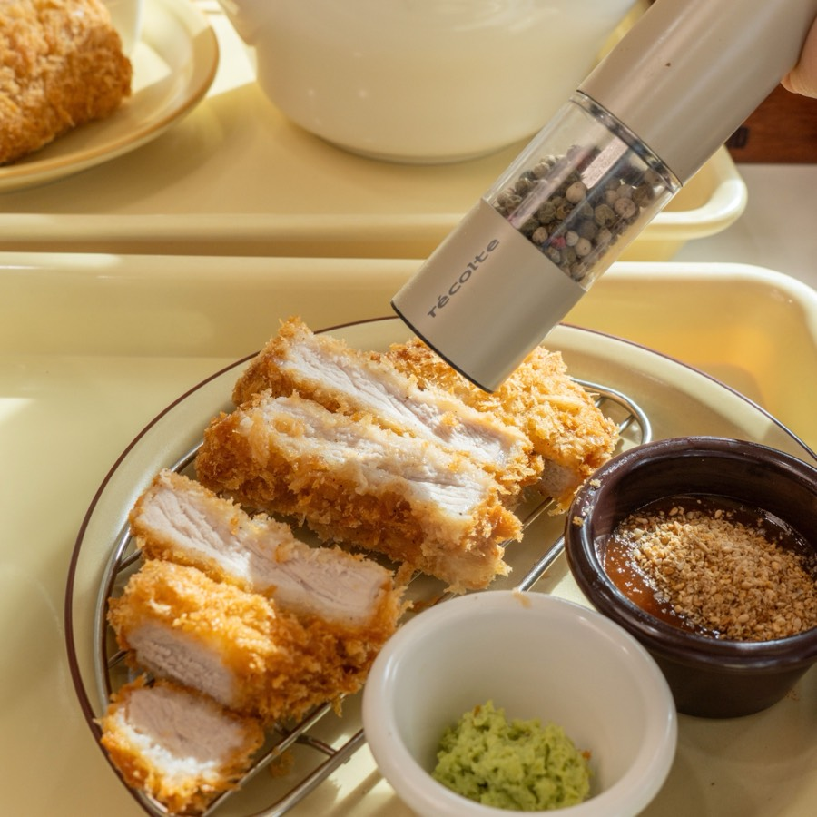
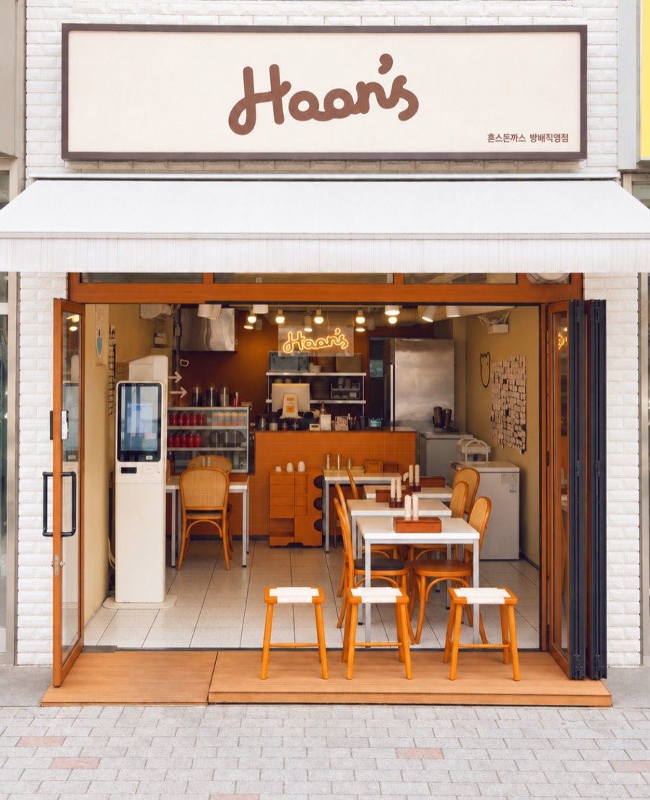

- 5 min walk from Sadang Station Exit 11
- Open 11:00–20:30, no afternoon break
- Closed Tuesdays
- Dine-in & takeout
Grind your own pepper

Every table is set with pepper grinders. Grind the pepper fresh over your katsu and season it the way you like.
The shop's motto, in Korean: 후추만 뿌려도 맛있는 돈까스 — “tonkatsu that's delicious with just pepper.”
Why locals keep coming back
“I totally agree with ‘delicious with just pepper.’ The katsu itself is such good quality that, with no off smell at all, plain pepper goes perfectly with it. […] Crispy outside, juicy inside — done right!!”
“I come to Hoon's Donkatsu at least twice a week! It's close to Sadang Station so it's easy to get to, and above all the katsu is so good. […] The staff are always kind, so I leave feeling happy.”
“This is where I always go when I eat alone! The owner is kind, too. The atmosphere is cozy, so I stop by often!!”
Translated from Korean reviews on Naver Map, a map app popular in Korea. Some lines are shortened with […].
See Hoon's on Naver Map4.9 · 1,137 reviews (Sep 2026)
Getting here

From Sadang Station (Lines 2 & 4) Exit 11 it is about 280 m, roughly a 5-minute walk. Hoon's is on the ground floor of Bangbaecheon-ro, between Sadang and Isu stations.
Look for the cream and orange storefront with the Hoon's sign. There is no parking at the shop.
서울 서초구 방배천로 42 1층
42 Bangbaecheon-ro, 1F, Seocho-gu, Seoul 06691